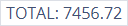
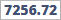

The Dashboard
Only available in the Startup Kit, Startup Kit VAT and Business Suite versions of Business Accountz
Dashboard Overview
The Dashboard component displays an overview of key financial information relating to your company’s performance.
It comprises up to 8 customisable information panels or ‘dashlets’ which each provide an insight into certain aspects of your finances:
- Account Balances
- Invoices and Bills
- Profit and Loss
- VAT Liability
- Income by Account
- Spending by Account
- Look Ahead
- Actuals
The information that most dashlets display is configurable. To edit, click on the dashlet to access its configuration screen.
Add dashlets
Dashlets can be added to the component by clicking the ‘Add dashlet’ button (see below) in the top right of the screen (if this button is not visible, it means all available dashlets are already displayed).
When you click the ‘Add dashlet’ button, a menu will appear(see below) displaying all available (i.e. currently hidden) dashlets.
To add a dashlet, simply select it from this list.
Remove dashlets
Dashlets can be removed from the dashboard by clicking the ‘Remove Dashlet’ button (shaped like an ‘X’) in the top right of the panel:
Rearrange dashlets
Dashlets can be rearranged as required by left click/dragging and dropping the (already visible) dashlet into the desired position. In the example above the Invoices and Bills dashlet is being dragged/dropped into the bottom left corner of the component.
The Dashlets
Account Balances
The Account Balances dashlet (as visible in the main dashboard, see image above) displays the current balances for the accounts selected (up to a maximum of 6 accounts). To view your Account Balances in greater detail, click on the dashlet to select it.
This launches the dashlet’s configuration screen.
This screen (see above) displays a list of all bank, loan, cash and credit card accounts in the system and their current balances.
Within this window we can select which accounts are visible in the main dashboard thumbnail, plus click a button to examine any of the accounts listed here in further detail in the Chart of Accounts component.
The following values, buttons and icons are visible within the Account Balances Dashlet:
 Return to main dashboard screen - Clicking this button returns you to the main dashboard
Return to main dashboard screen - Clicking this button returns you to the main dashboard-  Account Totals - Displays the total for all accounts visible in the dashlet
 Account Visibility Checkbox - Tick this box to make the account visible in the main Dashboard thumbnail.
Account Visibility Checkbox - Tick this box to make the account visible in the main Dashboard thumbnail. Account Name - Displays the account name.
Account Name - Displays the account name. Account Type Icon - Displays the account type (bank, loan, cash or credit card).
Account Type Icon - Displays the account type (bank, loan, cash or credit card). Account Negative Balance Warning - The yellow warning icon appears when your account balance falls below zero. Click the icon to go to the Look Ahead Dashlet.
Account Negative Balance Warning - The yellow warning icon appears when your account balance falls below zero. Click the icon to go to the Look Ahead Dashlet.-  Account Total - Displays the current total for the account in focus.
 Rearrange Accounts Icon - Drag and drop this icon to change the order of accounts in the dashlet.
Rearrange Accounts Icon - Drag and drop this icon to change the order of accounts in the dashlet. Go To Account - Clicking this button locates the account in focus in the Chart of Accounts component.
Go To Account - Clicking this button locates the account in focus in the Chart of Accounts component.- Account Name - Displays the account name.
Invoices and Bills
The Invoices and Bills dashlet (as visible in the main dashboard, see image above) displays the number of customer invoices outstanding and the total amount you are owed, plus the number of supplier bills outstanding and the total amount you owe them.
The dashlet contains the following data fields:
- Number of unpaid invoices - The total number of invoices which are marked as unpaid in the system (i.e. sale transactions using the ‘invoices unpaid’ account in the ‘To Account’ field for which the ‘Paid’ checkbox is unticked)
- Amount you are owed - The total amount you are owed (i.e. the sum total of the unpaid invoices listed in the previous field)
- Number of unpaid bills - The total number of bills which are marked as unpaid in the system (i.e. purchase transactions using the ‘bills unpaid’ account in the To Account field for which the ‘Paid’ checkbox is unticked)
- Amount you owe - The total amount you owe (i.e. the sum total of the unpaid bills listed in the previous field)
To view your invoices and bills in greater detail, click on the dashlet to select it.
This screen comprises two panels which detail all outstanding invoices and bills individually:
- Unpaid Invoices (Left Panel)
- Unpaid Bills (Right Panel)
Unpaid Invoices panel
This panel displays a table containing the following columns/values/clickable links:
- Unpaid Invoices Total - The total amount you are owed
- Company - The customer this invoice pertains to (click on this value to access the customer’s record within the Customer Records component)
- Amount - The amount outstanding for this invoice
- Invoice No. - The invoice’s reference number (click on this value to load the invoice in the Document Editor component)
- Date - The invoice’s tax date
Unpaid Bills panel
This panel displays a table containing the following columns/values/clickable links:
- Company - The supplier this bill pertains to, if applicable (click on this to access the supplier’s record within the Supplier Records component)
- Amount - The amount outstanding for this invoice
- Invoice No. -The bill’s reference number
- Date - The bill’s tax date
Top Toolbar
The top toolbar displays the following buttons/values:
- Return to main dashboard screen - Clicking this button returns you to the main dashboard
Profit and Loss
The Profit and Loss dashlet displays a chart showing a weekly, monthly, or quarterly comparison between the current year’s Profit and Loss figures, and previous years’ figures, as set in the dashlet’s configuration screen. N.B. the data presented is based on the calendar year, only.
To configure the information displayed in the chart, click on the dashlet to select it.
This launches the dashlet’s configuration screen.
Within this screen you can set which year(s) are included in the chart by ticking/unticking that year’s checkbox (see below).

Top Toolbar
The top toolbar displays the following buttons:
- Return to main dashboard screen - Clicking this button returns you to the main dashboard screen
 Toggle Chart Period - Toggles between Quarters/Months/Weeks for the periods displayed.
Toggle Chart Period - Toggles between Quarters/Months/Weeks for the periods displayed.
VAT Liability
N.B. This dashlet is only available in Startup Kit VAT and Business Suite versions of Business Accountz V3.
The VAT Liability dashlet thumbnail displays the following values:
- VAT to Submit - The VAT amount owed to HMRC
- Period - The current VAT period this amount relates to
- Days Left to Submit - The number of days you have to submit your return manually
- Days Left to Pay (Direct Debit) - The number of days left to pay the amount outstanding if you use the HMRC online gateway
N.B. For the Days Left to Submit and Days Left to Pay (Direct Debit) values, this can only be calculated based on submissions to HMRC directly from Business Accountz. Clicking the dashlet thumbnail accesses the VAT Return component.
Income by Account
This dashlet comprises a bar or pie chart (as defined by the user) displaying your income broken down by account, either as a percentage of total income or in units of base currency.
To configure the information displayed in the chart, click on the dashlet to select it.
Here you can set which accounts are displayed for this panel in the main dashboard component, choose whether the account totals are displayed as a percentage or as base currency, set the chart type (pie or bar chart), and (if required) set a start and/or end date for the chart displayed.
The dashlet comprises 3 sections:
- Top Toolbar - Set Date Range/Chart Type/Chart Unit
- Left Panel - Select Account(s)/Show Other
- Right Panel - The Income By Account Chart
Top Toolbar
This toolbar offers the following buttons/options:
- Return to main dashboard screen - Clicking this button returns you to the main dashboard screen
 Toggle Chart Unit - Toggles between % and £ (or your base currency) for your account totals.
Toggle Chart Unit - Toggles between % and £ (or your base currency) for your account totals. or
or  Toggle Chart Type - Toggles between bar and pie chart types.
Toggle Chart Type - Toggles between bar and pie chart types. Start Date - Sets a Start Date for your chart totals
Start Date - Sets a Start Date for your chart totals End Date - Sets an End Date for your chart totals
End Date - Sets an End Date for your chart totals
Left Panel
The left column(see below) enables you to set which accounts/account groups are visible in the chart. Tick/Untick the relevant account to show/hide it.
The ‘Show Other’ checkbox affects how the ‘Various Accounts’ value is calculated(see below for more details).
If you tick an account group in this list, then the accounts contained within the group are automatically greyed out, and the account group is represented by a single value in the chart (see below).
In this example, the ‘Telesales Group’ account group has been ticked, thus automatically unticking the accounts contained within this group, and representing them as a single combined value in the chart.
Right Panel

The right panel comprises the ‘Income By Account’ pie or bar chart itself, displaying your data as set in the previous two sections.
The chart also includes an item, entitled ‘Various Accounts’, which combines all accounts which each total less than 1% of total income into a single value.
N.B. Hovering your mouse over the ‘Various Accounts’ item displays the individual values for the accounts which make up this item (see below).
Please note that when the ‘Show Other’ box is ticked in the left column (see above), the ‘Various Accounts’ value includes all unticked accounts in the ‘Select Account(s)’ column.
This is used if you wish to compare certain accounts against the remainder of your income (for example, if you wished to compare your Sales account’s income compared to everything else combined, you would tick ‘Sales’ and ‘Show Other’ and leave everything else unticked).
Spending by Account
Similar to the Income by Account dashlet (see above), this dashlet comprises a bar or pie chart (as defined by the user) displaying your spending broken down by account, either as a percentage of total expenditure or in units of base currency.
To configure the information displayed in the chart, click on the dashlet to select it.
Here you can set which accounts are displayed for this panel in the main dashboard component, choose whether the account totals are displayed as a percentage or as base currency, set the chart type (pie or bar chart), and (if required) set a start and/or end date for the chart displayed.
The dashlet comprises 3 sections:
- Top Toolbar - Set Date Range/Chart Type/Chart Unit
- Left Panel - Select Account(s)/Show Other
- Right Panel - The Spending By Account Chart
Top Toolbar
This toolbar offers the following buttons/options:
- Return to main dashboard screen - Clicking this button returns you to the main dashboard screen
- Toggle Chart Unit - Toggles between % and £ (or your base currency) for your account totals.
- or Toggle Chart Type - Toggles between bar and pie chart types.
- Start Date - Sets a Start Date for your chart totals
- End Date - Sets an End Date for your chart totals
Left Panel
The left column(see below) enables you to set which accounts/account groups are visible in the chart. Tick/Untick the relevant account to show/hide it.
The ‘Show Other’ checkbox affects how the ‘Various Accounts’ value is calculated(see below for more details).
If you tick an account group in this list, then the accounts contained within the group are automatically greyed out, and the account group is represented by a single value in the chart (see below).
In this example, the ‘Employees Group’ account group has been ticked, thus automatically unticking the accounts contained within the group, and representing them as a single combined value in the chart.
Right Panel
The right panel comprises the ‘Spending By Account’ pie or bar chart itself, displaying your data as set in the previous two sections.
The chart also includes an item, entitled ‘Various Accounts’, which combines all accounts which each total less than 1% of total expenditure into a single value.
N.B. Hovering your mouse over the ‘Various Accounts’ item displays the individual values for the accounts which make up this item (see below).
Please note that when the ‘Show Other’ box is ticked in the left column (see above), the ‘Various Accounts’ value includes all unticked accounts in the ‘Select Account(s)’ column.
This is used if you wish to compare certain accounts against the remainder of your expenditure (for example, if you wished to compare your Rent and Rates account’s expenditure compared to everything else combined, you would tick ‘Rent and Rates’ and ‘Show Other’ and leave everything else unticked).
Look Ahead

The Look Ahead dashlet displays a chart showing the forecasted balance for a selected account (or account group) for a defined period, as set in the dashlet’s configuration screen.
If your account balance is due to fall below zero (or your overdraft limit), the dashlet will display a warning icon on that date.
To configure the information displayed in the chart, click on the dashlet to select it.

Here you can set which account or account group is displayed for this panel in the main dashboard component (n.b. you can only select one account/account group at a time), choose the forecast period length, plus view an analysis of the transaction/balance data for any point on the chart.
The dashlet comprises 3 sections:
- Top Toolbar - Toggle Chart Period
- Left Panel - Select Account/Account Group
- Right Panel - The Look Ahead Chart
Top Toolbar
The top toolbar displays the following buttons:
- Return to main dashboard screen - Clicking this button returns you to the main dashboard screen
 Toggle Chart Period - Toggles between 31 Days/60 Days/1 Year for the forecasted period displayed.
Toggle Chart Period - Toggles between 31 Days/60 Days/1 Year for the forecasted period displayed.
Left Panel
The left column (see below) enables you to set which account/account group is visible in the chart (n.b. only accounts which have transactions/automated transactions entered against them will appear in this list). Tick the relevant account or account group to select it.
Right Panel
The right panel comprises the ‘Look Ahead’ chart itself, displaying your data as set in the previous two sections.
The ‘X’ axis displays the date and the ‘Y’ axis displays account balance.
N.B. Hovering your mouse over any date point on the chart (see below) displays transaction and balance data for this date for the account/account group selected (click ‘X’ to close this box).

Actuals
The Actuals dashlet shows a comparison of spending (or income) for a particular account or account group. This is displayed on a weekly, monthly or quarterly basis, and also shows a comparison between the current and previous years’ figures.
Each point in the chart represents the total spending (or income) for the account/account group for that week/month/quarter.
To configure the information displayed in the chart, click on the dashlet to select it.
This launches the dashlet’s configuration screen. This comprises four sections:
Top Toolbar
The top toolbar displays the following buttons:
- Return to main dashboard screen - Clicking this button returns you to the main dashboard screen
- Toggle Chart Period - Toggles between Quarters/Months/Weeks for the periods displayed.
Left Toolbar
Here you can set which account or account group is displayed in the chart (tick the relevant checkbox to select it).
Right toolbar
Here you can set which year(s) are included in the chart by ticking/unticking that year’s checkbox (see below).
Chart

This section displays the chart (using the currently defined settings, see above) as it will appear in the dashboard thumbnail.